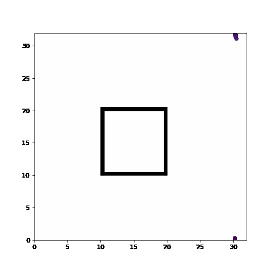

Exercises part II: obstacles in continuous space#
Models of collective behavior are sometimes used to model groups of humans in particular situations like panic in a crowd or a circle pit at a heavy metal show. These models can help us answer practical questions such as: Where should we put the emergency exit if we want a panicked crowd to find it easily? This involves the modeling of collective behavior with obstacles to model impenetrable walls and other architectural features of the system.
Feel free to use the code below to play around with obstacles and changes in direction. In the current set-up, agents are trying to cross the obstacle and should never be allowed to enter. Unfortunately, discretization can let them teleport across boundaries and bad handling of boundaries can let to unphysical behavior. Can you help protect the structure from the swarm?
import numpy as np
import scipy as sp
from scipy import sparse
from scipy.spatial import cKDTree
from math import floor
import matplotlib.pyplot as plt
from matplotlib.animation import FuncAnimation
from matplotlib.patches import Rectangle
from IPython.display import HTML
#Parameters
L = 32 #size of the world
density = 1.0 #spatial density of agents
N = int(density*L**2) #number of agents
r = 1.0 #influence distance
v = 1.0 #velocity of agents
noise = 0.15 #scale of uniform noise in radiant
#initial conditions
pos = np.zeros((N,2))
orient = np.random.uniform(-np.pi, np.pi,size=N)
#sets up the plot where color = orientation
fig, ax= plt.subplots(figsize=(6,6))
qv = ax.quiver(pos[:,0], pos[:,1], np.cos(orient), np.sin(orient), orient, clim=[-np.pi, np.pi])
plt.xlim([0, 32])
plt.ylim([0, 32])
#Feel free to add hard obstacles here!
#Forbidden spaces are marked in the Obstacle array and can be plotted below
#[Think about the discrete space and time unit below]
ds = 5 #discrete space unit
deltat = 0.75 #timestep
width = 0.5 #width of obstacles
Obstacle = np.zeros((ds*L,ds*L))
#bottom wall
ax.add_patch(Rectangle((10,10), 10, width, color='k'))
Obstacle[ds*10:floor(ds*(10+width)),ds*10:ds*20] = 1
#top wall
ax.add_patch(Rectangle((10,20), 10, width, color='k'))
Obstacle[ds*20:floor(ds*(20+width)),ds*10:ds*20] = 1
#left wall
ax.add_patch(Rectangle((10,10), width, 10, color='k'))
Obstacle[ds*10:ds*20,ds*10:floor(ds*(10+width))] = 1
#right wall
ax.add_patch(Rectangle((20-width,10), width, 10, color='k'))
Obstacle[ds*10:ds*20,floor(ds*(20-width)):ds*20] = 1
plt.close()
#the model itself
def animate(i):
global orient
tree = cKDTree(pos,boxsize=[L,L])
dist = tree.sparse_distance_matrix(tree, max_distance=r,output_type='coo_matrix')
#important 3 lines: we evaluate a quantity for every column j
data = np.exp(orient[dist.col]*1j)
# construct a new sparse marix with entries in the same places ij of the dist matrix
neigh = sparse.coo_matrix((data,(dist.row,dist.col)), shape=dist.get_shape())
# and sum along the columns (sum over j)
S = np.squeeze(np.asarray(neigh.tocsr().sum(axis=1)))
#new orientation = average of close neighbors + noise
orient = np.angle(S)+noise*np.random.uniform(-np.pi, np.pi, size=N)
#calculate new positions with Euler's method
cos, sin= np.cos(orient), np.sin(orient)
newpos = pos #potential new position
newpos[:,0] = (pos[:,0] + deltat*v*cos)%L
newpos[:,1] = (pos[:,1] + deltat*v*sin)%L
#Different way of doing a modulo
#newpos[pos>L] -= L
#newpos[pos<0] += L
#reverse around obstacle
for bad_boid in range(N):
#[insert smart obstacle management below]:
if Obstacle[int(floor(ds*newpos[bad_boid,1])),int(floor(ds*newpos[bad_boid,0]))]==1:
#bad boid! turn around in some way
orient[bad_boid] = orient[bad_boid]+np.pi
cos, sin= np.cos(orient[bad_boid]), np.sin(orient[bad_boid])
pos[bad_boid,0] = (pos[bad_boid,0] + deltat*v*cos)%L
pos[bad_boid,1] = (pos[bad_boid,1] + deltat*v*sin)%L
else:
pos[bad_boid,0] = newpos[bad_boid,0]
pos[bad_boid,1] = newpos[bad_boid,1]
#update quiver plot
qv.set_offsets(pos)
qv.set_UVC(cos, sin,orient)
return qv,
#animation details
fps = 20
nb_seconds = 5
anim = FuncAnimation(fig,animate,frames=nb_seconds*fps,interval=1000/fps)
anim.save('wall.gif', dpi=90)
plt.close()
MovieWriter ffmpeg unavailable; using Pillow instead.
